| Model | Fitted values (predicted response) |
|---|---|
| 1. Simplest model | 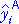 |
| 2. More complex model | |
| 3. Most complex model | 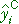 |
Comparing the fit of two models
The explained sum of squares for any linear regression model describes the difference between the fit of two models:
In the case of simple linear regression, the two models (and their fitted values) are:
| Model | Fitted values (predicted response) | |
|---|---|---|
| Simplest model | 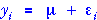 | 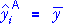 |
| More complex model (more parameters) |
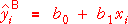 |
In general, the more complex model could involve 2 or more explanatory variables (numerical or categorical).
Components
We define components based on the fitted values from the two models,
| total (unexplained by simpler model) |
improvement in fitted value from using more complex model |
residual (unexplained by complex model) |
||
| 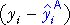 | 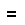 | 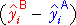 | 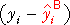 |
If the models are fitted by least squares, the sums of squares of these components satisfy a similar relationship. The sum of squares of the 'improvements' is the explained sum of squares and it summarises the differences between the fitted values from using model B over model A. It is denoted by SSB|A.
| SSTotal | SSB|A | SSResid | ||
| 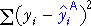 | 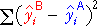 | 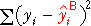 |
These are the sums of squares in a simple analysis of variance table.
Sequence of three models
These ideas can be extended to a sequance of three models, each of which is more complex than the previous one — i.e. it involves more parameters.
| Model | Fitted values (predicted response) |
|---|---|
| 1. Simplest model | 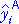 |
| 2. More complex model | |
| 3. Most complex model | 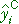 |
Provided each model has at least the flexibility of the previous model in the sequence, each can provide fitted values that are closer to the observed response values than the previous model.
| improvement of model B over model A |
improvement of model C over model B |
residual (unexplained by most complex model) |
||||
| 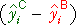 | 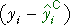 |
If parameter estimates and fitted values for all three models are obtained by least squares, the sums of squares of the components satisfy a similar relationship:
| SSTotal | SSB|A | SSC|B | SSResid | |||
| 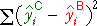 | 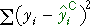 |
The component sums of squares are sequential sums of squares and can be used to compare the fit of the models with an analysis of variance test.
Degrees of freedom
We mentioned above that the sequence of models should be of increasing complexity, with each model allowing the previous model as a special case. For example, the linear regression model is
Restricting the slope of this model to β1 = 0 reduces the model to the simpler model,
The extra flexibility of each model, compared to the previous one in the sequence is due to additional parameters.
The degrees of freedom for the sum of squares comparing two models equals the difference in the number of parameters.
Distributions of the sequential sums of squares
Consider the sum of squares describing the improved fit of model C over the simpler model B. If model B actually fits the data (so the extra complexity of model C is unnecessary), then the sum of squares has a chi-squared distribution whose degrees of freedom are the difference between the number of parameters in the models,
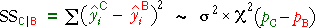
The residual sum of squares also has a chi-squared distribution provided the most complex model fits the data. Its degrees of freedom are the sample size minus the number of parameters in the most complex model.
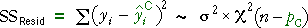